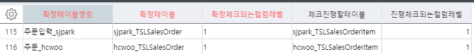
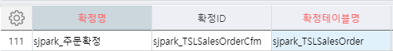
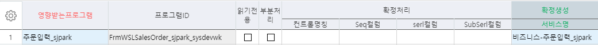
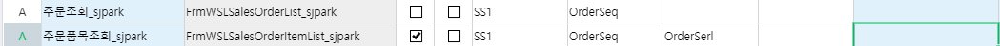
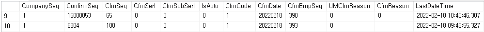
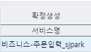
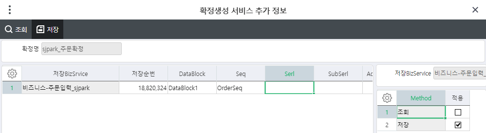
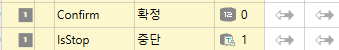

확정
Ace 확정, 중단, 진행
_TCOMConfimTable = 확정을 사용하겠다
_TCOMConfirm => 확정 사용할 때 필수로 join해야하는 테이블
확정테이블관리

- 코드관리(개발자) - 확정/중단관리 = 확정테이블관리(2014)
확정테이블명칭 - 주문입력_sjpark
확정테이블 - sjpark_TSLSalesOrder
확정체크되는컬럼레벨 - 확정할 마스터영역 갯수
체크진행할테이블 - sjpark_TSLSalesOrderItem
진행체크되는컬럼레벨 - 1
==> _TCOMConfirmTable 에 데이터가 들어간다
- 코드관리(개발자) - 확정/중단관리 = 확정관리(2014)

확정명 - sjpark_주문확정
확정ID - sjpark_TSLSalesOrderCfm
확정테이블명칭
사용할거기에 사용안함에 체크 x
==> 작성 후 더블클릭
=> 영향받는 프로그램에 '주문조회' '주문품목조회' '주문입력'넣기


1. 조회
2. 품목조회 (읽기전용)
3. 주문입력 (읽기전용)
키값이 3개인거 까지 조회가능 (진행되는 컬럼레벨3)
확정생성
확정번호가 _TCOMConfirm 에 들어감

입력에서는 확정이 안됨
대신 확정생성 - 서비스명 (비즈니스-주문입력_sjpark 넣어야함)


DataBlock(DataBlock1), Seq(OrderSeq) 넣기
=> 더블클릭 => 저장 적용체크
===================================================================
_TCOMConfirm 테이블
Cfmcode - 확정확인 (1이면 확정)
다시 조회하면 확정 풀려있음 => SP에 넣어줘야함
* SP (화면에 안보이더라도 넣어줘야함)
서비스구성에도 추가
(확정,중단은 컬럼명을 고정해서 쓰자)
Confirm 확정 int
IsStop 중단 fix String –1 (오른쪽화살표)

* SP
cfmcode as ConFirm 추가
JOIN 걸기
ConfirmSeq는 알고 있어야한다